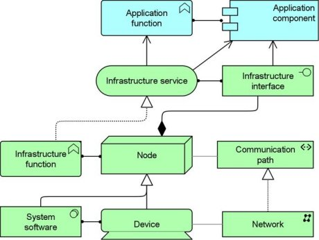

The Infrastructure Usage viewpoint shows how applications are supported by the software and hardware infrastructure: the infrastructure services are delivered by the devices; system software and networks are provided to the applications. This viewpoint plays an important role in the analysis of performance and scalability, since it relates the physical infrastructure to the logical world of applications. It is very useful in determining the performance and quality requirements on the infrastructure based on the demands of the various applications that use it.
| Stakeholders | Application, infrastructure architects, operational managers |
| Concerns | Dependencies, performance, scalability |
| Purpose | Designing |
| Abstraction Level | Coherence |
| Layer | Application layer, Technology layer |
| Aspects | Behaviour, Active Structure |
Concepts and Relations
